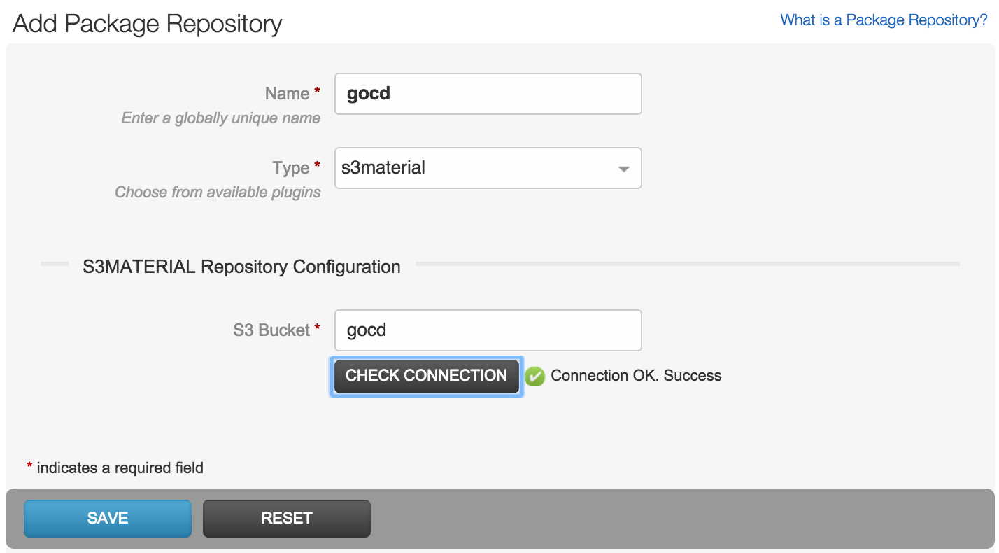
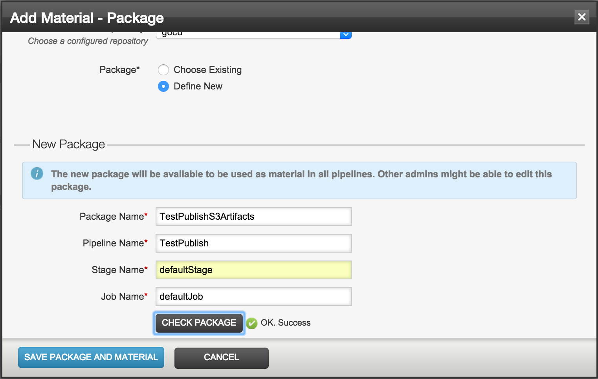
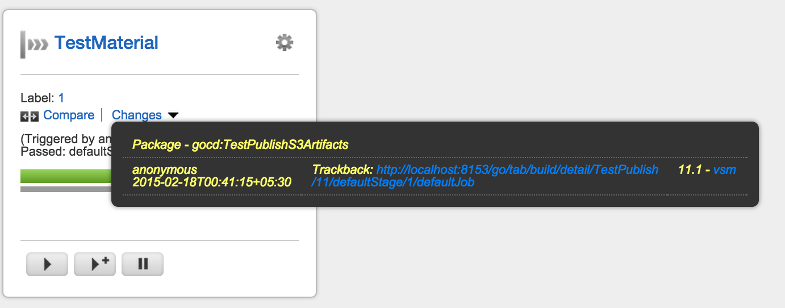

Material Poller
This is a package repository plugin that polls S3 for artifacts and triggers the pipeline as appropriate.
Adding the package repository
The package repository can be configured by heading to Admin -> Package Repositories
In the Add Package Repository form, provide a name for the S3 package repository. This is a unique name to identify the S3 package repository.
Next, choose s3material as the Type of the package repository. This should bring up a text box to enter the S3 bucket name. Enter the name of the bucket where you want to store the artifacts in this field.
Use the Check Connection button to verify that the credentials are fine and the provided bucket exists. This state is shown in the following screenshot:

Click on Save to add the S3 package repository.
Configuring as material
Once the package has been created, we can add a Package material to any pipeline. The steps for adding the package material to an existing pipeline or to a new one are the same.
Following Materials tab of an existing pipeline, choose Add Material and select Package. The Add Material - Package dialog comes up. Here, choose the Repository name (gocd in the example) and choose to define a new package. On doing this, the New Package form comes up.
Provide an identifiable name for the Package Name. Also configure the Pipeline Name, Stage Name and Job Name based on where we want to get the artifacts from.
Click on Check Package to ensure that we have entered the right pipeline, stage and job details, and that the artifacts exist on S3.
This state is shown in the following screenshot:

Click on Save Package And Material button to save the new package and material.
Note that the saved package can be reused in other jobs/pipelines.
Trackback and artifact information
Once the material is added, it will poll for new artifacts on S3. If found, a new run of the pipeline will be triggered. The Trackback URL will point to the source of the artifacts, as shown in the following screenshot:

The material plugin will also set environment variables that identify the source label, S3 bucket, pipeline name, stage name and job name, as shown form the job log output below:
[go] setting environment variable 'GO_PACKAGE_GOCD_TESTPUBLISHS3ARTIFACTS_LABEL' to value '11.1'
[go] setting environment variable 'GO_REPO_GOCD_TESTPUBLISHS3ARTIFACTS_S3_BUCKET' to value 'gocd'
[go] setting environment variable 'GO_PACKAGE_GOCD_TESTPUBLISHS3ARTIFACTS_PIPELINE_NAME' to value 'TestPublish'
[go] setting environment variable 'GO_PACKAGE_GOCD_TESTPUBLISHS3ARTIFACTS_STAGE_NAME' to value 'defaultStage'
[go] setting environment variable 'GO_PACKAGE_GOCD_TESTPUBLISHS3ARTIFACTS_JOB_NAME' to value 'defaultJob'
The Fetch plugin, will make use of this information to get the artifacts. This information can be used to fetch artifacts from S3 using a custom script if necessary.